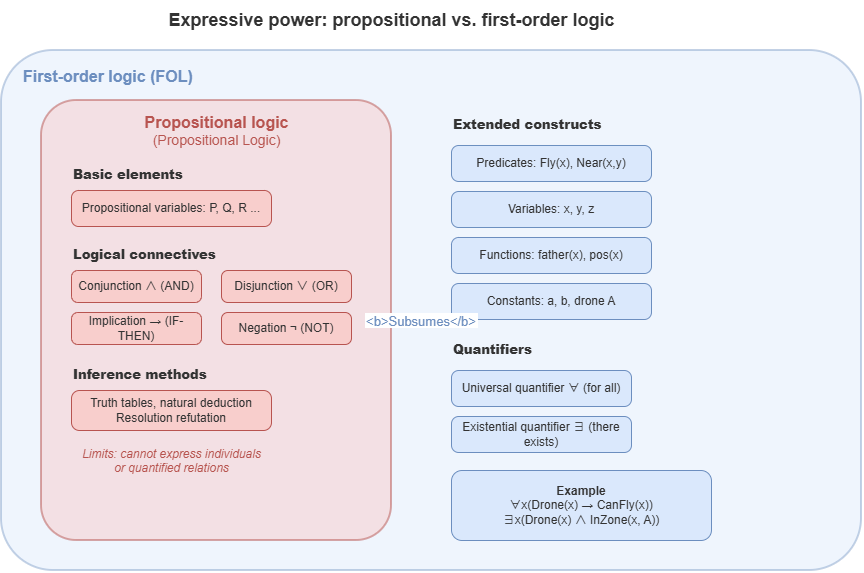
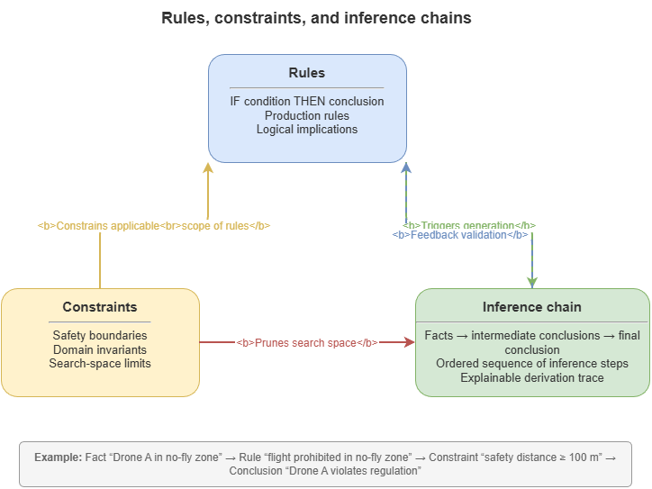
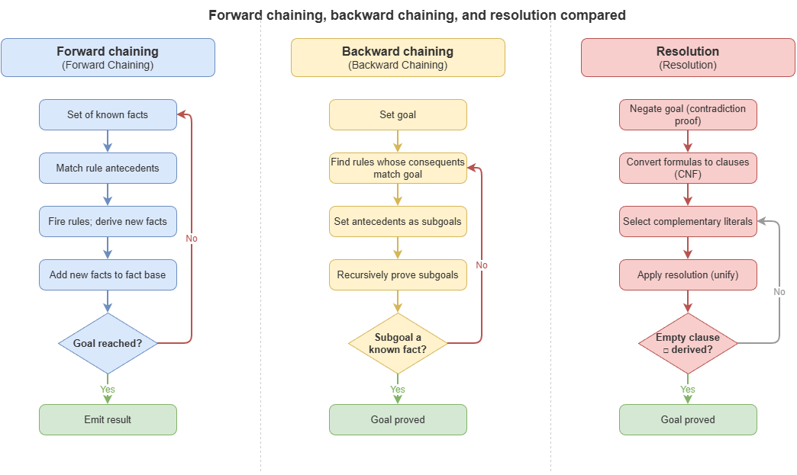

If the previous chapter mainly answered why AI must move from symbolic–connectionist opposition toward neuro-symbolic reconstruction, this chapter answers why, in the renewed neuro-symbolic era, formal logic, rule systems, and automated reasoning remain unavoidable theoretical foundations. Whether one later uses knowledge graphs, graph neural networks, differentiable logic, probabilistic logic programming, or neuro-symbolic frameworks coupling large language models with external solvers, whenever a system must explicitly express concepts, relations, constraints, reasoning chains, and auditable grounds, it returns to logical representation and rule-based inference.
On the surface, the deep learning era has accustomed many researchers to vectors, tensors, and parameters; yet on questions of rule consistency, concept hierarchies, causal dependence, institutional constraint, and accountability, continuous representations do not automatically replace formalization. In safety-critical systems a model must not only “output a result” but “state grounds, show process, verify consistency, and delimit boundaries”—which requires a logical language for objects, attributes, relations, and rules in the world, plus controllable inference from known facts to new conclusions.
This chapter pursues that goal. It introduces propositional logic and first-order predicate logic as a clear, compositional knowledge framework; discusses rules, constraints, and reasoning chains and how engineering knowledge systems grow from simple logical forms to executable rule structure; presents forward chaining, backward chaining, and resolution as classical automated reasoning mechanisms; builds on description logic and ontology languages for concept hierarchies, relational constraints, and semantic consistency; introduces uncertain and fuzzy logic to explain why real knowledge is often poorly captured by pure Boolean logic; and closes with an engineering view of how formal logic becomes rule engines, knowledge bases, business decision systems, and structural resource in modern neuro-symbolic stacks.
The chapter does not aim to train pure logicians. It aims to establish a key idea: neuro-symbolic AI is “symbolic” not because it borrows a few logical terms but because core capabilities—knowledge expression, rule constraint, explanation generation, inference control, certification auditing—rest on formal logic and its engineering variants. Without this base, later discussion of KGs, ontologies, neural constraint learning, differentiable inference, probabilistic logic programming, and certification-grade reasoning loses solid footing.
2.1 Propositional logic and first-order predicate logic#
Formal logic is among the earliest and most central theoretical bases of symbolic AI. Its importance is not that it exhausts real-world complexity but that it supplies a strict, clear, compositional expressive framework—turning knowledge from vague natural-language statements into machine-operable, verifiable, inferable formal objects. From a logical viewpoint, knowledge is not only what is said but in what structure it is expressed and what conclusions follow under which rules. For all later neuro-symbolic methods, this formal expressive power is foundational.
Propositional logic is the simplest logical system. It treats a whole statement as a proposition and cares only whether that proposition is true or false, not internal structure. For example, “Aircraft A entered a no-fly zone,” “Weather is severe,” “There is conflict risk” can each be atomic propositions. Propositional logic is structurally simple and semantically clear, suited to basic facts and Boolean combinations. Through conjunction, disjunction, negation, implication, and biconditional, richer formulas are built. If \(P\) means “aircraft entered no-fly zone” and \(Q\) means “system raises alarm,” then \(P \rightarrow Q\) means “if the aircraft entered the no-fly zone, the system raises an alarm.”
Basic semantics rests on truth values. Each proposition is true or false under an interpretation; compound truth is determined by components and connectives. Conjunction \(P \land Q\) is true only if both are true; disjunction \(P \lor Q\) if at least one is true; implication \(P \rightarrow Q\) is false only when \(P\) is true and \(Q\) is false, true otherwise. Though abstract, this removes dependence on tone, rhetoric, or implicit context: formulas have strict truth conditions.
Propositional logic suits simple rules but is expressively limited: it cannot analyze internal objects, attributes, and relations. “All UAS must obey airspace rules” and “Some UAS violated rules” become two separate propositions with no internal structure for “UAS,” “obey,” or “airspace rules.” Propositional logic expresses how facts combine, not what objects and relations facts are made of.
First-order predicate logic extends the language with individuals, variables, predicates, functions, and quantifiers. Knowledge decomposes into “who has what property,” “who stands in what relation to whom,” and “which rules hold universally or existentially.” For example, let \(UAV(x)\) mean “\(x\) is a UAS” and \(MustFollow(x,r)\) mean “\(x\) must follow rule \(r\).” Then “all UAS must follow airspace rules” becomes: $\( \forall x \, (UAV(x) \rightarrow MustFollow(x, AirspaceRule)) \)\( where \)\forall x\( is universal quantification. “There exists a UAS on an emergency mission” becomes: \)\( \exists x \, (UAV(x) \land EmergencyMission(x)) \)\( with \)\exists x$ for existential quantification.
First-order logic qualitatively strengthens representation: universal and existential laws without per-object rules; relations via predicates and variables (e.g. \(ConflictRisk(A,B)\)); compositional structure over classes, attributes, relations, and rule schemes—central for KGs, ontologies, and rule reasoning.
In applications, propositional logic is a pedagogical entry for rule structure, Boolean conditions, and basic inference; first-order logic is a natural base for domain knowledge organizing objects, relations, and general rules. Many early expert systems, though not always written in standard logical syntax, mirrored these structures in spirit.
Greater expressiveness brings harder inference. Propositional logic is relatively decidable with truth tables and standard algorithms; first-order logic is generally more complex and may not decide in finite steps. Automated reasoning algorithms, restricted description logics, and layered engineering rule systems all seek balance between expressiveness and computability.
From a neuro-symbolic viewpoint, propositional and first-order logic are not mere history but the semantic substrate of many modern methods—rules as losses, KG relations as learnable embeddings, LM outputs aligned with external solvers. The standing question remains: in what form is knowledge expressed, and how do rules constrain inference? Without logical grounding, designs slide toward vague empirical patching. Learning these logics is not reviving vintage expert systems but mastering, in a modern AI setting, the basic language of how explicit knowledge is possible.
2.2 Rules, constraints, and reasoning chains#
If logic supplies a language for knowledge, rule systems supply executable structure. In many tasks knowledge appears not as isolated propositions but as “if certain conditions hold, conclude or require something” or “under some circumstances the system must respect a limit.” That is the core of rules and constraints. Symbolic AI entered engineering less through abstract logic alone than through rule organization and traceable reasoning chains on top of it.
A rule is structured knowledge from conditions to conclusions. The most common form is a production rule: IF condition THEN conclusion—e.g. “if aircraft enters no-fly zone, trigger high-risk alert”; “if weather above threshold and battery below threshold, forbid continuing the mission.” Rules are intuitive and maintainable by domain experts. Many business systems use production-style knowledge even when not written as pure logic; the essence still tracks logical implication.
Rules differ from bare formulas in emphasizing an operational reading: logic asks whether a proposition holds under an interpretation; rule systems further ask what judgment or action fires when conditions are detected. Rules can represent knowledge and drive control flow—well suited to operational decisions, risk assessment, workflow, and compliance.
Closely related are constraints. Rules often say what can be inferred; constraints say what must not be violated or what boundaries must hold—e.g. “density of aircraft in a corridor at any time ≤ threshold”; “emergency missions outrank ordinary logistics”; “paths must not cross no-fly zones.” Constraints often encode safety envelopes, regulatory red lines, or physical limits. Good average behavior means little if key constraints are broken.
In knowledge organization, rules and constraints interleave: constraints can be encoded as rules (“if path crosses no-fly zone, mark noncompliant”); rules can be read as soft constraints guiding judgment. Together they form a knowledge layer: rules derive conclusions and trigger processes; constraints define admissible and forbidden regions. Neuro-symbolic “rule injection,” “constraint learning,” and “compliance checking” sit on this layer.
With rules and constraints comes the reasoning chain: from initial facts, through repeated rule matching and intermediate conclusions, to a final judgment or decision—e.g. detect abnormal position → infer high-risk airspace → combine mission type and weather → raise conflict risk → trigger rerouting priority. Each step depends on prior facts or conclusions, forming a chain. That chain is not only an internal computation path but the source of interpretability and auditability—supporting answers to “why this decision” by tracing the chain.
Reasoning chains matter in three ways. First, structured explanation: unlike black boxes that output only scores or labels, rule-driven chains show which conditions fired, which rules activated, and how conclusions compounded. Second, error localization: wrong outputs trace to mis-identified conditions, badly designed rules, or biased intermediate steps. Third, compliance auditing: regulated domains need not only results but processes consistent with rules and policy.
Chains also bring complexity. Real rule networks are often branching, layered, possibly cyclic or conflicting. Different rules may support the same conclusion; constraints may tension—e.g. “emergency priority” vs. “no crossing no-fly zones.” Rule systems need hierarchy, priority, default strategies, and conflict resolution—not mere lists of clauses.
For neuro-symbolic AI, rules and constraints are the interface between symbolic knowledge and statistical learning: rules as prior knowledge constraining output space; as regularizers in training; as post-hoc validators screening or correcting model outputs. Rule systems are not only legacy expert systems but living knowledge organization in hybrid architectures.
Moving from formal logic to rules, constraints, and chains is knowledge engineering of logic: logic gives strict semantics; rules give executable structure; constraints define admissible space; chains turn static storage into dynamic judgment. Automated reasoning, description-logic concept constraints, probabilistic logic, and engineering rule engines all extend this frame.
2.3 Forward chaining, backward chaining, and resolution#
Given logical expressions and rule structure, a core question remains: how to derive new conclusions automatically from known facts and rules. That is the task of automated reasoning—not naively “applying rules” but choosing inference direction, organizing intermediates, controlling search, and reaching conclusions. Classical symbolic AI became complete knowledge systems largely through forward chaining, backward chaining, and resolution.
Forward chaining is data-driven reasoning from facts. The system checks the current fact base, finds rules whose premises are satisfied, adds their conclusions as new facts, and repeats until quiescence or a goal is reached. Example: facts “A in restricted area,” “restricted area + low visibility raises risk,” and “low visibility now” forward-chain to “A in restricted state” then “A’s risk level elevated.”
Forward chaining fits streaming updates and event-driven settings naturally: new facts incrementally extend conclusions without full restart—useful in dynamic airspace monitoring where position, weather, and mission state continuously trigger downstream judgments. Its downside: with many rules and a specific goal, it may derive many irrelevant intermediates, increasing search cost.
Backward chaining is goal-driven: to test a goal, find rules that conclude it, treat their premises as new subgoals, recurse until facts support subgoals or search fails. Example: to test “high conflict risk for A,” find rules concluding that risk, then check premises such as path crossing, relative distance below threshold, priority conflict.
Backward chaining suits goal-focused, query-style tasks—QA, diagnosis, rule query. It explores only what supports the goal, avoiding the proliferation of forward chaining. Logic programming and many diagnostic expert systems rely on it. It can be weaker for continuous streams of dynamic data than forward chaining, and deep rule nets may blow up recursive subgoal search.
Forward and backward chaining are two control strategies: from the known vs. from the goal. Real systems often combine them—e.g. forward maintenance of live intermediate facts, backward verification or explanation for specific queries or alerts. Hybrid neuro-symbolic paths often mirror this: continuous data-driven state plus targeted rule queries and explanation tracebacks.
Resolution is another pillar, built on clausal forms in propositional and first-order logic. The idea is to resolve complementary literals to produce new clauses, iterating toward the empty clause to show unsatisfiability—hence that a conclusion follows from the KB (refutation completeness intuition). It is less “step along IF–THEN rules” than normalize KB and negated goal to clauses and apply one resolution rule uniformly.
Example sketch: from “all emergency aircraft have high priority” and “A is emergency,” to prove “A has high priority,” assume the negation, clausify, resolve until empty clause—showing the goal is entailed. Compared with chaining, resolution is a unified proof mechanism with strong theoretical properties.
Resolution underpins automated theorem proving, logic programming, and consistency checking. In first-order logic it pairs with unification: finding substitutions to match expressions—e.g. \(Conflict(x,y)\) with \(Conflict(A,B)\) via \(x{=}A, y{=}B\). Unification lets rule application generalize beyond ground constants and deeply influenced logic programming and symbolic frameworks.
Resolution is not always the most convenient engineering mechanism: theoretically unified but potentially heavy in large dynamic settings; less intuitive than rule chains to practitioners. Many deployed systems favor forward/backward chaining for runtime and reserve resolution for consistency checks, formal proof, or offline verification. Differentiable or probabilistic rule treatments often borrow unification-style matching and conclusion derivation without literal classical resolution.
Together, these mechanisms represent propagation and event response (forward), goal-driven explanation (backward), and formal proof and consistency (resolution)—the technical base of classical symbolic inference and the conceptual source for rule control, solver calls, explainable chains, and formal verification in neuro-symbolic systems.
2.4 Description logic and ontology languages: foundations#
Propositional and first-order logic are powerful, yet large-scale knowledge engineering soon faced a practical issue: first-order logic is too general, inference can be hard, and modeling freedom too high for standardized, efficient reasoning. For concept hierarchies, class membership, attribute restrictions, relational constraints, and instance classification, an intermediate logic is needed—expressive enough for structural knowledge yet computationally tractable. Description logics (DLs) grew in that gap.
DLs are a family of restricted, structured formalisms for concepts, roles (relations), and individuals. “Concepts” approximate classes of objects; “roles” are binary relations; “individuals” are instances. In low-altitude settings, “UAS,” “emergency aircraft,” “no-fly zone,” “high-priority mission” may be concepts; “located in,” “executes,” “constrained by,” “in conflict with” may be roles; specific aircraft, missions, zones are individuals. DL aims at inferable semantic structure over these elements.
DL excels at concept hierarchies and constraints—e.g. emergency aircraft subclass of aircraft; aircraft on emergency missions usually high priority; objects in no-fly zones may not be legally crossed by paths. Natural language alone is ambiguous; full first-order encodings are heavy to manage at scale; DL systematizes these common patterns.
Structurally, DL often separates terminological (TBox) and assertional (ABox) layers. TBox defines concepts and roles generally—e.g. “emergency aircraft = aircraft executing emergency missions.” ABox asserts instances—“A is emergency aircraft,” “A is in corridor C.” Reasoners combine universal and particular knowledge—e.g. if TBox says all emergency aircraft are high-priority and ABox says A is emergency, infer A is high-priority.
A central DL idea is concept constructors: intersection, union, complement; existential and universal role restrictions; cardinality bounds. Example: “high-risk aircraft” as “aircraft in restricted airspace with low battery”; “compliant path” requiring all traversed cells are not no-fly; “monitored aircraft” as “linked to at least one supervisory node.” Such expressions pervade KGs, ontologies, and rule systems.
Ontology languages standardize knowledge representation on top of DL ideas. An ontology is not merely a taxonomy or glossary but a formal semantic architecture for a domain: how concepts are defined, how they relate, which constraints must hold, what is derivable. It answers not only “what terms exist” but how meaning and inference are structured.
In modern practice, RDF, RDFS, and OWL anchor the Semantic Web. RDF uses subject–predicate–object triples as the basic frame. RDFS adds classes, subclasses, properties. OWL adds richer DL-style constructs—e.g. EmergencyUAV subclass of UAV, hasPriority as a property, HighRiskZone disjoint from SafeZone, roles transitive or symmetric.
DL and ontology languages lift domain knowledge from scattered rules to structured semantics. Rule systems excel at “if–then” but not always at classification and layering; DL and ontologies fill that layer. Together, systems answer not only “did a rule fire” but “what class an object belongs to,” “what constraints apply to a class,” “whether relations inherit or exclude”—foundational for KG construction, semantic retrieval, rule matching, and neuro-symbolic reasoning.
DL is not a trivial weakening of first-order logic but a deliberate trade: some expressive freedom for better decidability, standards, and engineering fit—hence a natural language base for knowledge-base construction. Later chapters on low-altitude ontologies, unified KG representation, and rule templates lean heavily on DL and OWL.
2.5 Uncertain logic and fuzzy logic: an introduction#
So far, propositional logic, first-order logic, rule systems, and DL largely assume bivalent knowledge: true/false, premise satisfied or not, constraint holds or fails. Real knowledge is often probabilistic, incomplete, fuzzy, conflicting, or context-dependent—e.g. “weather is poor,” “path risk is elevated,” “targets are relatively close,” “sensor state is unstable.” Pure Boolean logic can become rigid, brittle, or unable to cover real complexity.
Symbolic reasoning therefore extended toward uncertain and fuzzy logic. Uncertain logic handles incompleteness and uncertainty—when truth is not definite and we need “possibly true,” “credibility of conclusion,” etc. Fuzzy logic handles graded concept boundaries—properties holding to a degree rather than absolutely—e.g. “distance between aircraft is small” as continuous membership.
Uncertain logic responds to missing information, noisy sensing, open-world randomness, and conflicting or weighted sources. Strict deduction remains useful but insufficient without ways to say conclusions are provisionally credible under current evidence. Frameworks include probabilistic logic, Bayesian networks, Dempster–Shafer theory, default logic, nonmonotonic logic—different forms sharing the goal of reasoning under incomplete, revisable, weighted evidence.
Nonmonotonic logic is especially important. Classical logic is monotonic: added knowledge never retracts prior conclusions. Real reasoning often revises—e.g. “path A feasible” until new weather revokes it. Default and nonmonotonic logics capture “accept by default unless defeated,” essential in open worlds where information is rarely complete and static.
Fuzzy logic targets vague boundaries. Classically an object is in or out of a set; fuzzily it has membership degree in \([0,1]\)—e.g. relation to a hazard zone as “0.8 inside”; weather along a continuum of severity. Membership functions map states to degrees; operations generalize intersection, union, complement. Rules become “if proximity is high and speed is large, raise risk degree”—common in control, risk, and decision support where rules are inherently graded and experiential.
Uncertain vs. fuzzy logic address different questions: uncertainty is epistemic (what we know about truth); fuzziness is semantic (how crisp the concept is). “Is it raining?” under bad sensors is uncertain; “strong wind” may be fuzzy. Real systems often combine probability, fuzziness, and rules.
For neuro-symbolic AI, these extensions bridge continuous learners and symbolic rules. Deep outputs are rarely hard Booleans but probabilities, similarities, confidences, or embeddings; symbol-only bivalence couples poorly. Fuzzy and probabilistic layers let rules stay structural while admitting continuous and uncertain evidence—underlying many differentiable reasoning frameworks, logic tensor networks, neural theorem provers, and probabilistic logic programs.
Learning uncertain and fuzzy logic is not abandoning classical logic but seeing that real knowledge systems balance rigor and flexible expression: classical logic supplies skeleton; uncertainty and fuzziness supply open-world and graded behavior—an important transition toward modern hybrid inference.
2.6 From formal logic to engineering rule systems#
This chapter has covered formal logic, rule structure, automated reasoning, description logic, and uncertainty extensions. A natural question remains: how do these abstractions enter real engineering systems? Formal logic is not confined to textbooks; it permeates expert systems, business rule engines, KG platforms, compliance systems, risk frameworks, and modern neuro-symbolic stacks. “From formal logic to engineering rule systems” does not mean copying math symbols into code wholesale but translating expressive power, rule thinking, constraint control, and inference structure into maintainable, executable, scalable design.
Engineering rule systems begin with structuring domain knowledge—initially in regulations, manuals, expert practice, oversight requirements, incidents, workflows. Such knowledge is not machine-ready; it needs concept extraction, relation organization, rule consolidation, and conflict analysis—knowledge engineering in the deep sense: not only “entering rules” but answering what core objects exist, how they relate, which rules are hard vs. soft, which apply generally vs. with exceptions, how conflicts resolve—decisions that determine system quality.
Implementation typically layers knowledge storage (facts, rules, terminology, metadata), inference execution (forward/backward chaining, constraint checks, conflict resolution, conclusion generation), explanation and audit (rule traces, chains, accountability), and interfaces (data ingest, business integration, queries). An engineering rule system is architecture for knowledge-driven decision, not a single rule file.
Compared with textbook logic, engineering must handle scale (thousands of rules, multi-level concepts), conflict (priority, exceptions, human review), performance (real-time latency), and maintenance (evolving policy and operations)—often using restricted subsets: production rules, decision tables, constraint templates, domain-specific languages; RDF/OWL/SHACL/SPARQL on KG platforms. Logic undergoes formal abstraction → restricted expression → platform implementation—preserving core ideas in forms closer to development and business collaboration.
In modern AI, rule systems have not been sidelined by deep learning. They act as safety rails filtering illegal outputs, checking hard constraints, and supplying explanatory grounds; as external knowledge coupled with KGs, retrieval, and solvers. In low-altitude traffic, state recognition, trajectory prediction, and risk scoring may be neural; no-fly rules, priority constraints, compliance checks, and explanation chains fit rule systems. The relation is division of labor, not replacement.
Neuro-symbolic AI is, in part, fusion of engineering rule systems with modern learning. Historically rules and statistics sat in different stacks; today they increasingly form layered systems: rules as priors before training, constraints during training, validators after inference; neural nets cover perception, high-dimensional representation, and pattern induction where rules are weak. Formal logic is no longer “the sole engine of all reasoning” but a critical structural resource in complex systems.
For this book’s line, the transition from logic to engineering rules is essential: knowledge bases need ontologies and rule templates; static reasoning needs queryable rules and chains; dynamic reasoning needs constraint screening and event semantics; certification needs auditable logical grounds; deployment needs layered coordination of rule services and model services. Engineering rule systems are the bridge embedding logic in real governance and decision-making.
The upshot: formal logic’s value is not building intelligence from logic alone but supplying explicit knowledge skeletons, rule control, and auditable inference structure for engineering systems that turn logic from theory into governable, operational capability—avoiding both “logic is obsolete theory” and “rules are just nested if-statements.” Logic and rules in modern AI are deeper and more foundational than those caricatures suggest.
2.7 Supplement: logic programming, Horn clauses, and modern symbolic reasoning tools#
Earlier sections centered classical symbolic concepts; this supplement sketches branches important in automated reasoning research and implementation—rooted in classical logic yet advancing efficiency, modeling flexibility, and engineering fit—so readers can later place neuro-symbolic tools in context.
Horn clauses and logic programming. Resolution works on clausal form, but full first-order clause sets are often heavy. Horn clauses—clauses with at most one positive literal—retain substantial expressiveness while improving computational behavior. They naturally encode “several premises jointly imply one conclusion,” the dominant pattern of domain knowledge. Logic programming treats execution as automatic proof of logical goals. Prolog uses SLD resolution, combining backward chaining and unification so programmers write clauses and the engine searches proofs. Prolog has limits on big data and complex control flow, but its “declare what holds, let the engine infer” paradigm shaped later tools. Datalog is a function-free fragment of Prolog with guaranteed termination and controlled complexity—suited to KG query, relational reasoning, and deductive databases. Many KG reasoners and rule-mining tools implement Datalog-style semantics.
Answer set programming (ASP). Classical logic programming is often monotonic; real systems need defaults, exceptions, and constraint satisfaction. ASP encodes problems as rules and integrity constraints; solvers compute stable models (answer sets)—each a consistent solution. Unlike classical LP, ASP supports negation as failure, default reasoning, and constraint propagation—elegant for “hold by default unless defeated.” Clingo-style solvers are used in combinatorial optimization, scheduling, diagnosis, and consistency verification. For safety-critical systems, ASP can enumerate admissible states under explicit constraints—valuable for conflict detection and compliance review.
SAT and SMT solvers. Another influential line is Boolean satisfiability (SAT) and satisfiability modulo theories (SMT). SAT asks whether a propositional formula is satisfiable; though NP-complete, modern solvers with conflict-driven clause learning handle millions of variables in practice. SMT extends SAT with theories—integers, reals, arrays, bit-vectors; Z3 is a flagship solver. SAT/SMT are central in software and hardware verification, program analysis, protocol checking. In neuro-symbolic stacks they can verify neural outputs against constraints or check embedded logical specs during training. Recent work couples LLMs with SMT: language models for understanding and formalization, solvers for strict logical adjudication—a typical neuro-symbolic pattern at the verification interface.
Differentiable logic programming. Classical inference is discrete and non-differentiable, blocking end-to-end gradient training. Differentiable logic aims to embed inference in differentiable computation. DeepProbLog extends probabilistic logic programming (ProbLog) with neural predicates, letting parts of rules be defined by nets while preserving probabilistic semantics for end-to-end training. NeurASP couples ASP answer-set semantics with neural perception while keeping logical constraints intact. The shared goal: rules participate in learning and optimization, not only as external supervision—important in safety-critical neuro-symbolic settings where domain rules should move from external oversight to internal integration while retaining interpretable structure.
From Horn clauses and logic programming through ASP and SAT/SMT to differentiable logic, these tools form a spectrum of modern symbolic machinery—different strategies and use cases, shared trend: symbolic reasoning is not frozen history but evolving resource for efficient, flexible coupling with neural methods. Later chapters on KG reasoning, constraint embedding, certification, and integration revisit these ideas.
Chapter summary#
This chapter surveyed symbolic logic, rule systems, and automated reasoning as the formal base of neuro-symbolic AI. Propositional and first-order logic supply languages from Boolean facts to object–relation–quantifier structure, organizing knowledge as inferable formal objects. Rules, constraints, and chains turn abstract logic into executable structure for interpretable judgment under conditions and boundaries. Forward chaining, backward chaining, and resolution illustrate data-driven, goal-driven, and proof-oriented control. Description logic and ontology languages balance expressiveness and computability for concepts, constraints, and consistency. Uncertain and fuzzy logic extend classical logic for incomplete knowledge, graded boundaries, and open worlds. Finally, the engineering view shows how logic becomes rule engines, KG platforms, compliance systems, and structural resource in neuro-symbolic hybrids.
The goal is not to leave readers in a historical symbolic frame but to see that modern neuro-symbolic AI inherits and reconstructs logical representation, rule control, and automated inference. Later material on KGs, ontology modeling, constraint learning, differentiable inference, probabilistic logic programming, certification, and deployment will return to these foundations. The next chapter turns to knowledge graphs and domain knowledge representation—how to build a unified semantic base for complex real domains on top of formal logic and engineering rules.
Key concepts#
Propositional logic: logic of whole-proposition truth values.
First-order predicate logic: logic with individuals, predicates, and quantifiers for objects, attributes, and relations.
Rules and constraints: structured knowledge for “what can be inferred” vs. “what must not be violated.”
Forward and backward chaining: classic data-driven vs. goal-driven inference strategies.
Description logic: DL family balancing expressiveness and decidability, underpinning ontology languages.
Discussion questions#
What is the core expressive difference between propositional and first-order logic?
Why do rule systems often deploy more easily in engineering than raw logical formulas alone?
In neuro-symbolic systems, which tasks suit forward chaining, backward chaining, and resolution respectively?
Case study#
Low-altitude flight-permit auto-review: express basic Boolean conditions in propositional logic; express “all aircraft meeting specific conditions” in first-order logic; demonstrate forward or backward chaining from a fact base to conclusions such as “cleared for takeoff,” “manual review required,” or “operation forbidden.”
Figure suggestions#
Figure 2-1: Comparing expressive power of propositional vs. first-order logic.

Figure 2-2: Relations among rules, constraints, and reasoning chains.

Figure 2-3: Contrasting workflows for forward chaining, backward chaining, and resolution.

Formula index#
Propositional implication: \(P \rightarrow Q\)
Universal example: \(\forall x\,(\mathrm{UAV}(x) \rightarrow \mathrm{MustFollow}(x, \mathrm{AirspaceRule}))\)
Existential example: \(\exists x\,(\mathrm{UAV}(x) \wedge \mathrm{EmergencyMission}(x))\)
Note: formulas emphasize logical expressions; later chapters compile these into graph rules and differentiable constraints.
References#
Robinson, J. A. (1965). A Machine-Oriented Logic Based on the Resolution Principle. Journal of the ACM, 12(1), 23–41.
Baader, F., Calvanese, D., McGuinness, D. L., Nardi, D., & Patel-Schneider, P. F. (Eds.). (2003). The Description Logic Handbook: Theory, Implementation, and Applications. Cambridge University Press.
Zadeh, L. A. (1965). Fuzzy Sets. Information and Control, 8(3), 338–353.
Kowalski, R. (1979). Logic for Problem Solving. North-Holland.
Reiter, R. (1980). A Logic for Default Reasoning. Artificial Intelligence, 13(1–2), 81–132.
Russell, S., & Norvig, P. (2021). Artificial Intelligence: A Modern Approach (4th ed.). Pearson.
Gelfond, M., & Lifschitz, V. (1988). The Stable Model Semantics for Logic Programming. Proceedings of the 5th International Conference on Logic Programming, 1070–1080.